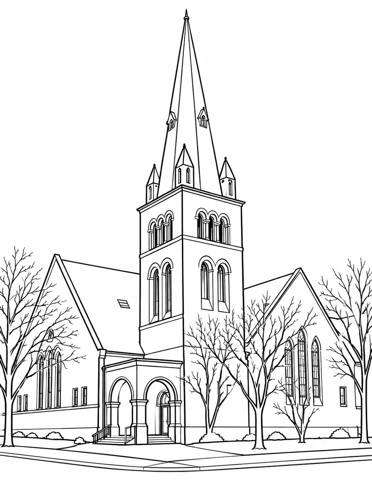

Saint Paul, Minnesota · Est. 1888
Something is coming.
2028
A historic sandstone church on Cathedral Hill is getting its next chapter. This is where we’ll share the work as it happens.

History
Built 1886–1888
The building opened as Dayton Avenue Presbyterian Church. It was designed by Cass Gilbert with James Knox Taylor, years before Gilbert drew the Minnesota State Capitol.
For more than a century it served the neighborhood as much as the congregation: worship and Sunday school, banquets and meetings, a clinic for young mothers, an adoption agency, and summer programs for kids.
The building sits in the Historic Hill Heritage Preservation District. Any work here is reviewed to protect what makes it worth saving.
- Architect
- Cass Gilbert with James Knox Taylor
- Style
- Richardsonian Romanesque
- Material
- Rock-faced red sandstone
- Sanctuary
- 450 seats
- 1886–88Dayton Avenue Presbyterian Church is built
- c. 1911Rear wing added
- 1978Included in the Woodland Park National Register Historic District
- 1980Included in the Historic Hill Heritage Preservation District
- 2028The next chapter opens
Build log
Follow the work
Design, approvals, restoration and construction. New entries are posted here as they happen.
-
October 2026
This site goes live
The first step in sharing what’s happening at 217 Mackubin. Photos, drawings and progress will follow.
-
Next
More soon
Follow along
Get an email when there’s something new to see. A few times a year, no more.
Thanks. You’re on the list.